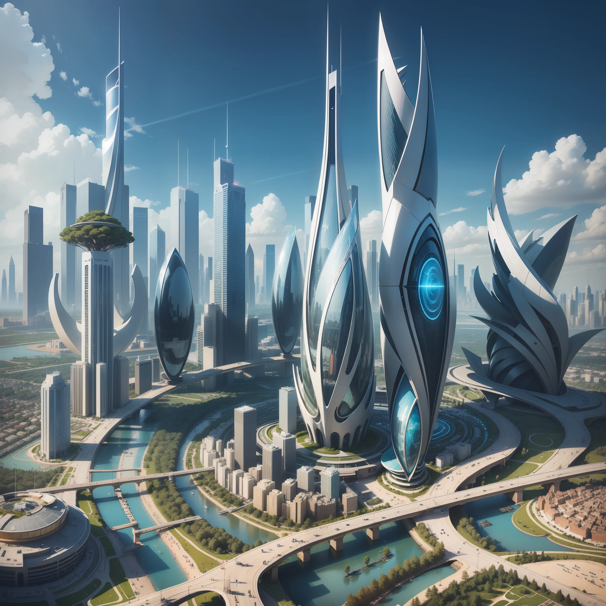
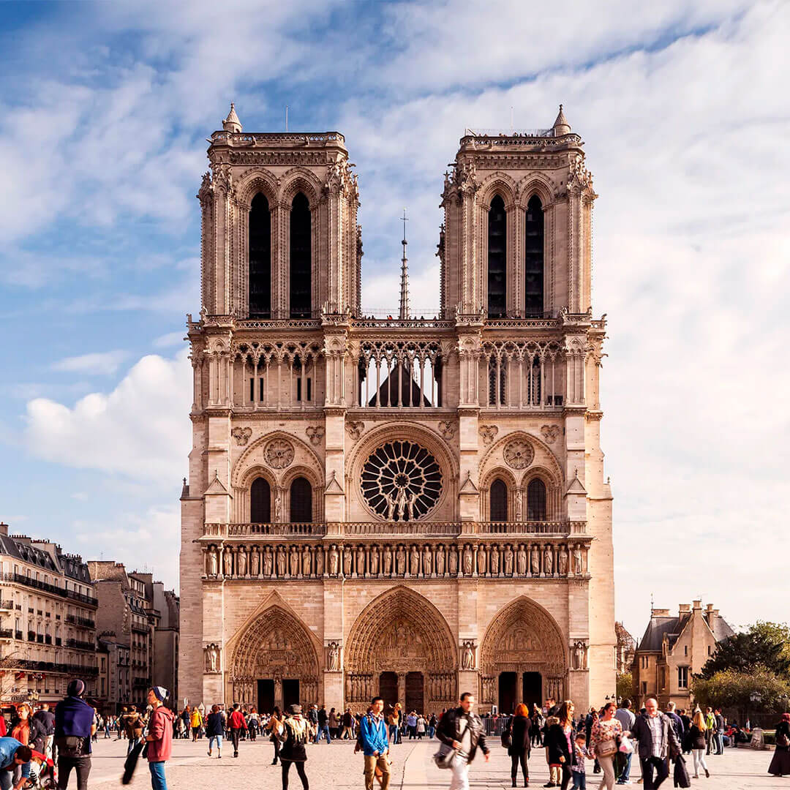
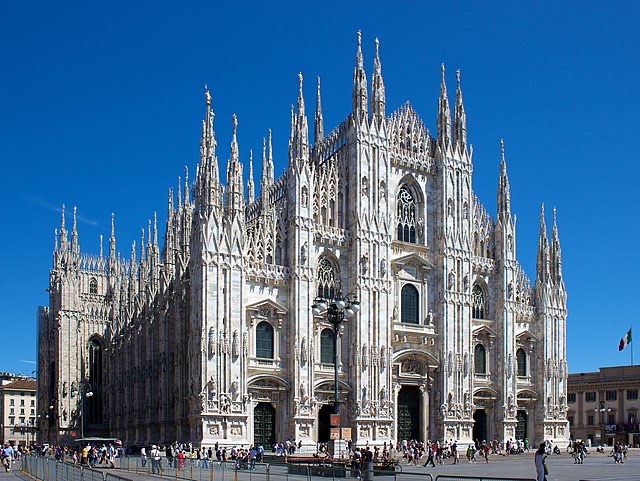

¿QUÉ SOMOS?
Somos una empresa de arquitectura especializada en tres estilos: futurista, medieval y neoclásico. Combinamos creatividad y precisión para diseñar espacios que fusionan lo mejor del pasado y del futuro
Somos una empresa de arquitectura especializada en tres estilos: futurista, medieval y neoclásico. Combinamos creatividad y precisión para diseñar espacios que fusionan lo mejor del pasado y del futuro
La construcción futurista se caracteriza por el uso de tecnologías avanzadas, materiales innovadores y diseños visionarios que buscan desafiar las convenciones arquitectónicas tradicionales.
Arquitectura medieval es una expresión historiográfica que engloba la producción arquitectónica del arte medieval. Los principales 3 estilos son: el Bizantino, románico, gótico.
Se caracteriza por su verticalidad y luminosidad. Surgida en Francia, se expandió por toda Europa, transformando las iglesias, catedrales y otros edificios religiosos.
